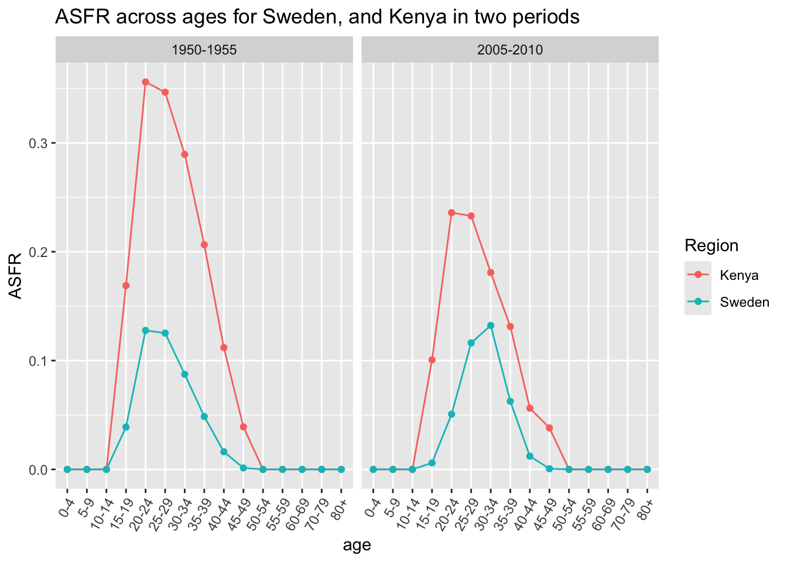
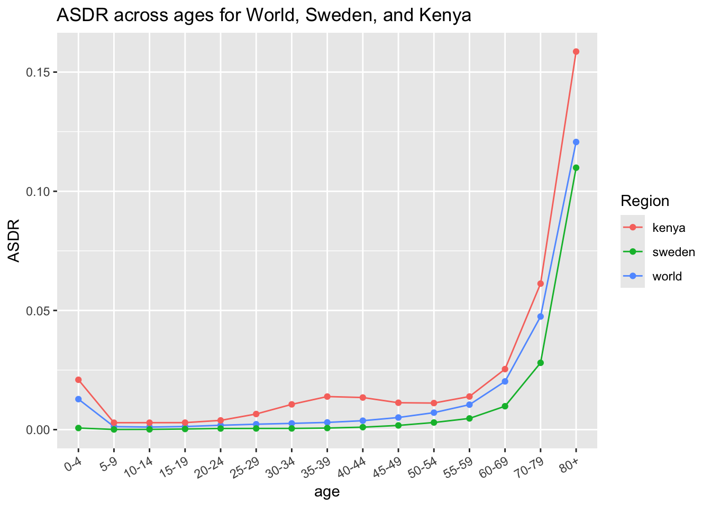

# Create new variable py = total person years for each data set
world_data$py <- world_data$py.men + world_data$py.women
kenya_data$py <- kenya_data$py.men + kenya_data$py.women
sweden_data$py <- sweden_data$py.men + sweden_data$py.womenUnderstanding World Population Dynamics by Huiyu Ding
Assignment 1 - PSYC593
Understanding population dynamics is important for many areas of social science. We will calculate some basic demographic quantities of births and deaths for the world’s population from two time periods: 1950 to 1955 and 2005 to 2010. We will analyze the following CSV data files - Kenya.csv, Sweden.csv, and World.csv. Each file contains population data for Kenya, Sweden, and the world, respectively. The table below presents the names and descriptions of the variables in each data set.
| Name | Description |
|---|---|
country |
Abbreviated country name |
period |
Period during which data are collected |
age |
Age group |
births |
Number of births in thousands (i.e., number of children born to women of the age group) |
deaths |
Number of deaths in thousands |
py.men |
Person-years for men in thousands |
py.women |
Person-years for women in thousands |
Source: United Nations, Department of Economic and Social Affairs, Population Division (2013). World Population Prospects: The 2012 Revision, DVD Edition.
The data are collected for a period of 5 years where person-year is a measure of the time contribution of each person during the period. For example, a person that lives through the entire 5 year period contributes 5 person-years whereas someone who only lives through the first half of the period contributes 2.5 person-years. Before you begin this exercise, it would be a good idea to directly inspect each data set. In R, this can be done with the View function, which takes as its argument the name of a data.frame to be examined. Alternatively, in RStudio, double-clicking a data.frame in the Environment tab will enable you to view the data in a spreadsheet-like view.
Question 1
We begin by computing crude birth rate (CBR) for a given period. The CBR is defined as: \[ \text{CBR} = \frac{\text{number of births}}{\text{number of person-years lived}} \]
Compute the CBR for each period, separately for Kenya, Sweden, and the world. Start by computing the total person-years, recorded as a new variable within each existing data.frame via the $ operator, by summing the person-years for men and women. Then, store the results as a vector of length 2 (CBRs for two periods) for each region with appropriate labels. You may wish to create your own function for the purpose of efficient programming. Briefly describe patterns you observe in the resulting CBRs.
Answer 1
# Function to compute the Crude Birth Rate (CBR)
compute_cbr <- function(populationData) {
populationData %>%
group_by(period) %>%
summarise(cbr = sum(births) / sum(py)) %>%
pull()
}# Compute the CBR for each data set
(world_cbr <- compute_cbr(world_data)) # CBR for world[1] 0.03732863 0.02021593(kenya_cbr <- compute_cbr(kenya_data)) # CBR for Kenya[1] 0.05209490 0.03851507(sweden_cbr <- compute_cbr(sweden_data)) # CBR for Sweden[1] 0.01539614 0.01192554There is a general decrease world-wide in terms of crude birth rate. However, we see opposite trends in Kenya and Sweden, where Kenya has an increased in crude birth rate while Sweden has a numerical decrease.
Question 2
The CBR is easy to understand but contains both men and women of all ages in the denominator. We next calculate the total fertility rate (TFR). Unlike the CBR, the TFR adjusts for age compositions in the female population. To do this, we need to first calculate the age specific fertility rate (ASFR), which represents the fertility rate for women of the reproductive age range \([15, 50)\). The ASFR for age range \([x, x+\delta)\), where \(x\) is the starting age and \(\delta\) is the width of the age range (measured in years), is defined as: \[ \text{ASFR}_{[x,\ x+\delta)} \ = \ \frac{\text{number of births to women of age $[x,\ x+\delta)$}}{\text{Number of person-years lived by women of age $[x,\ x+\delta)$}} \] Note that square brackets, \([\) and \(]\), include the limit whereas parentheses, \((\) and \()\), exclude it. For example, \([20, 25)\) represents the age range that is greater than or equal to 20 years old and less than 25 years old. In typical demographic data, the age range \(\delta\) is set to 5 years. Compute the ASFR for Sweden and Kenya as well as the entire world for each of the two periods. Store the resulting ASFRs separately for each region. What does the pattern of these ASFRs say about reproduction among women in Sweden and Kenya?
Answer 2
calculate ASFR individually for world, Kenya, and Wweden data.
Compare ASFR between Kenya and Sweden in a graph.
# Compare ASFRs for Kenya and Sweden and put them in the same df.
(ASFR_Kenya_Sweden_comparison <- data.frame(Kenya = kenya_data$asfr,
Sweden = sweden_data$asfr)) Kenya Sweden
1 0.00000000 0.0000000000
2 0.00000000 0.0000000000
3 0.00000000 0.0000000000
4 0.16884585 0.0389089519
5 0.35596942 0.1277108826
6 0.34657814 0.1252436647
7 0.28946367 0.0873641591
8 0.20644016 0.0486037714
9 0.11193267 0.0162101857
10 0.03905205 0.0013418290
11 0.00000000 0.0000000000
12 0.00000000 0.0000000000
13 0.00000000 0.0000000000
14 0.00000000 0.0000000000
15 0.00000000 0.0000000000
16 0.00000000 0.0000000000
17 0.00000000 0.0000000000
18 0.00000000 0.0000000000
19 0.10057087 0.0059709097
20 0.23583536 0.0507320271
21 0.23294721 0.1162085625
22 0.18087964 0.1322744621
23 0.13126805 0.0625923991
24 0.05626214 0.0121600765
25 0.03815044 0.0006143942
26 0.00000000 0.0000000000
27 0.00000000 0.0000000000
28 0.00000000 0.0000000000
29 0.00000000 0.0000000000
30 0.00000000 0.0000000000# make a graph to be able to see the differences visually
ASDR_graph <- ASFR_Kenya_Sweden_comparison %>%
mutate(age = kenya_data$age,
period = kenya_data$period) %>%
pivot_longer(values_to = "ASFR", names_to = "Region", cols = 1:2)
# correct order of ages shown
ASDR_graph$age <- factor(ASDR_graph$age,
levels = gtools::mixedsort(unique(ASDR_graph$age)))
ggplot(data = ASDR_graph,
aes(x = age, y = ASFR, group = Region, color = Region)) +
geom_line() +
geom_point() +
theme(axis.text.x = element_text(angle = 60, hjust = 1))+ # change the x-ais angles
ggtitle("ASFR across ages for Sweden, and Kenya in two periods") +
facet_wrap(~ period) # have two graphs for separate period side-by-side
Women in both Kenya and Sweden showed similar pattern that reproduction starts at 15-19 year-old and decreased across time. Women in Kenya have higher fertility overall than women in Sweden.
Question 3
Using the ASFR, we can define the TFR as the average number of children women give birth to if they live through their entire reproductive age. \[ \text{TFR} = \text{ASFR}_{[15,\ 20)} \times 5 + \text{ASFR}_{[20,\ 25)} \times 5 + \dots + \text{ASFR}_{[45,\ 50)} \times 5 \]
We multiply each age-specific fertility rate rate by 5 because the age range is 5 years. Compute the TFR for Sweden and Kenya as well as the entire world for each of the two periods. As in the previous question, continue to assume that women’s reproductive age range is \([15, 50)\). Store the resulting two TFRs for each country or the world as a vector of length two. In general, how has the number of women changed in the world from 1950 to 2000? What about the total number of births in the world?
Answer 3
Compute TFR for each data set
(world_tfr <- compute_tfr(world_data))[1] 5.007248 2.543623(kenya_tfr <- compute_tfr(kenya_data))[1] 7.591410 4.879568(sweden_tfr <- compute_tfr(sweden_data))[1] 2.226917 1.902764Compare totals of women and births, first calculating them by period and see how much it has changed.
# Compute totals of women and births in the world by period
(totals_world <- world_data %>%
group_by(period) %>%
summarise(total_women = sum(py.women),
total_births = sum(births))
)# A tibble: 2 × 3
period total_women total_births
<chr> <dbl> <dbl>
1 1950-1955 6555686. 488892.
2 2005-2010 16554781. 674581.# Compare how much these totals have changed
(changes_totals <- totals_world[2,-1]/totals_world[1,-1]) total_women total_births
1 2.525256 1.379818The total number of women increased from 1950 to 2000, and so does the total number of births in the world.
Question 4
Next, we will examine another important demographic process: death. Compute the crude death rate (CDR), which is a concept analogous to the CBR, for each period and separately for each region. Store the resulting CDRs for each country and the world as a vector of length two. The CDR is defined as: \[ \text{CDR} = \frac{\text{number of deaths}}{\text{number of person-years lived}} \] Briefly describe patterns you observe in the resulting CDRs.
# Function to compute the Crude death rate (CDR)
compute_cdr <- function(population_data) {
population_data %>%
group_by(period) %>%
summarise(cbr = sum(deaths) / sum(py)) %>%
pull()
}# Compute the CDR for each data set
(World_cdr <- compute_cdr(world_data))[1] 0.019318929 0.008166083(Kenya_cdr <- compute_cdr(kenya_data))[1] 0.02396254 0.01038914(Sweden_cdr <- compute_cdr(sweden_data))[1] 0.009844842 0.009968455We are seeing a decreased in crude death rate across the world and Kenya. However, the crude death rate in Sweden seems to be stable across time.
Question 5
One puzzling finding from the previous question is that the CDR for Kenya during the period of 2005-2010 is about the same level as that for Sweden. We would expect people in developed countries like Sweden to have a lower death rate than those in developing countries like Kenya. While it is simple and easy to understand, the CDR does not take into account the age composition of a population. We therefore compute the age specific death rate (ASDR). The ASDR for age range \([x, x+\delta)\) is defined as: \[ \text{ASDR}_{[x,\ x+\delta)} \ = \ \frac{\text{number of deaths for people of age $[x,\ x+\delta)$}} {\text{number of person-years of people of age $[x,\ x+\delta)$}} \] Calculate the ASDR for each age group, separately for Kenya and Sweden, during the period of 2005-2010. Briefly describe the pattern you observe.
Calculate ASDR for each region. Then make a graph for ASDR across ages as a function of region.
# Compute ASDR for each data set
world_data_asdr <- compute_asdr(world_data)
kenya_data_asdr <- compute_asdr(kenya_data)
sweden_data_asdr <- compute_asdr(sweden_data)
# combine all data into one df to make graph
asdr_results <- data.frame(
"world_asdr" = compute_asdr(world_data[world_data$period == "2005-2010",])$asdr,
"kenya_asdr" = compute_asdr(kenya_data[kenya_data$period =="2005-2010",])$asdr,
"sweden_asdr" = compute_asdr(sweden_data[sweden_data$period == "2005-2010",])$asdr,
"age" = unique(world_data$age)) %>%
pivot_longer(names_to = "Region",values_to = "ASDR", 1:3) %>% # long format
mutate(Region = str_replace_all(Region, "_asdr", "")) # remove '_asdr'
# correct order of ages shown
asdr_results$age <- factor(asdr_results$age,
levels = gtools::mixedsort(unique(asdr_results$age)))
ggplot(data = asdr_results, aes(x = age, y = ASDR, group = Region, color = Region)) +
geom_line() +
geom_point() +
theme(axis.text.x = element_text(angle = 30, hjust = 1))+
ggtitle("ASDR across ages for World, Sweden, and Kenya")
Sweden across age range has a lower death rate compared to Kenya, contrary to what we observed when we collapsed across ages.
Question 6
One way to understand the difference in the CDR between Kenya and Sweden is to compute the counterfactual CDR for Kenya using Sweden’s population distribution (or vice versa). This can be done by applying the following alternative formula for the CDR. \[ \text{CDR} \ = \ \text{ASDR}_{[0, 5)} \times P_{[0,5)} + \text{ASDR}_{[5, 10)} \times P_{[5, 10)} + \cdots \] where \(P_{[x, x+\delta)}\) is the proportion of the population in the age range \([x, x+\delta)\). We compute this as the ratio of person-years in that age range relative to the total person-years across all age ranges. To conduct this counterfactual analysis, we use \(\text{ASDR}_{[x,x+\delta)}\) from Kenya and \(P_{[x,x+\delta)}\) from Sweden during the period of 2005–2010. That is, first calculate the age-specific population proportions for Sweden and then use them to compute the counterfactual CDR for Kenya. How does this counterfactual CDR compare with the original CDR of Kenya? Briefly interpret the result.
# Function to compute population proportion by period
compute_pop_prop <- function (pop_data) {
pop_data %>%
group_by(period) %>%
mutate(pop_prop = py / sum(py)) %>%
ungroup()
}# Compute Kenyas CDR Kenya had Sweden's population distribution
kenya_asdr_2005 <- kenya_data_asdr[kenya_data_asdr$period == "2005-2010",]
sweden_data_2005 <- sweden_data[sweden_data$period == "2005-2010",]
kenya_cdr_sweden <- kenya_asdr_2005 %>%
mutate(temp_cdr = asdr * sweden_data_2005$pop_prop) %>%
group_by(period) %>%
summarise(cdr_re_sweden = sum(temp_cdr))The Kenya’s CDR to Sweden’s population distribution, which gives 0.0232165, is smaller than the 0.0103891 , which is the original Kenya’s CDR.